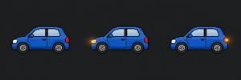

项目 H · 项目实战 · 拓展案例 H2
使用SFML实现车辆转向灯动画
按固定帧序切换车辆转向灯图像，观察精灵图截取与定时动画效果。
检查帧矩形与实际显示
eee_H2/main.cpp · 帧数组与切换
100×100 精灵窗口
原始雪碧图

帧 0 和帧 2 都引用同一个
(0,0,100,100) 区域，不是雪碧图中存在第四张不同图片。源码使用 SFML 窗口、纹理和事件循环；网页只复现纹理矩形切换，不执行 SFML。图片复制自用户提供的 eee_H2/car_sprites.png，仅随这批本地教学 HTML 打包；若要对外发布，仍需核实图片的使用授权。若单独移动此 HTML，须同时带上同目录的 PNG 文件。